Тревога, страхи и паника
Постоянное напряжение, тревожные мысли, избегание ситуаций и беспокойство о здоровье.
Клинический психолог · магистр психологии МГУ
Я Виктория Миловская. Помогаю взрослым разобраться с тревогой, сложными отношениями и жизненными кризисами — бережно, с уважением к вашей истории и в вашем темпе.
МГУ имени М. В. Ломоносова
Beck Institute · обучение КПТ
Повышение квалификации: 2015–2024
01 / Знакомство
Я магистр психологии МГУ имени М. В. Ломоносова, клинический психолог и нейропсихолог. Направление магистратуры — семейная психология и семейное консультирование. Продолжаю обучение и осваиваю методы, которые помогают учитывать разные стороны запроса.
На встречах мы вместе исследуем мысли, чувства и привычные реакции. Важно не только разобраться с текущей ситуацией, но и развивать навыки, которые вы сможете использовать в повседневной жизни.
Очень ценю ваше доверие. Для меня важны уважение, отсутствие осуждения и возможность говорить о сложном в спокойной обстановке.
С чем можно обратиться
Не обязательно точно формулировать запрос. Можно начать с того, что сейчас мешает жить так, как вам хотелось бы.
Постоянное напряжение, тревожные мысли, избегание ситуаций и беспокойство о здоровье.
Сложности в паре, детско-родительских отношениях, эмоциональная зависимость и одиночество.
Неуверенность, самокритика, чувство вины и трудности с принятием решений.
Рабочее напряжение, раздражение, гнев, обида, грусть и ощущение истощения.
Когда привычные опоры исчезают, важно дать себе время и получить поддержку.
Переживания из прошлого, которые продолжают влиять на настоящее и отношения.
02 / Образование и квалификация
Основное образование и профильная подготовка — в начале. Нажмите на любой документ, чтобы рассмотреть его целиком.
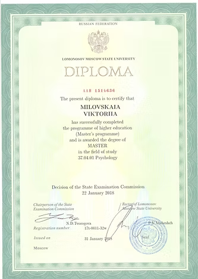
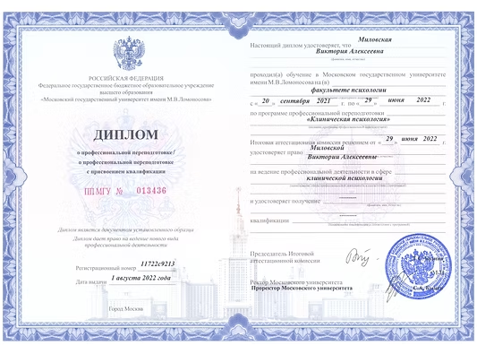
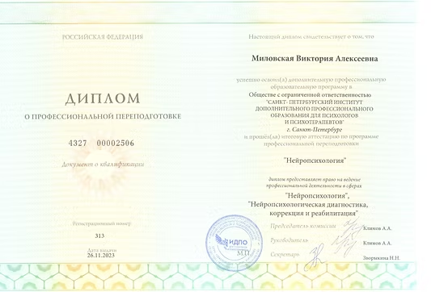
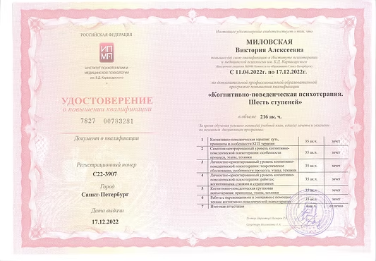
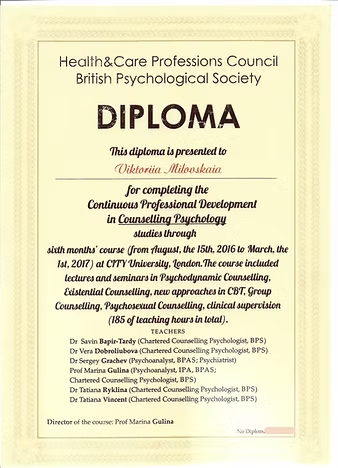
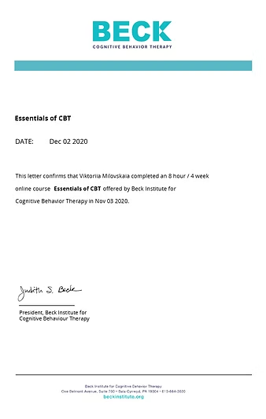
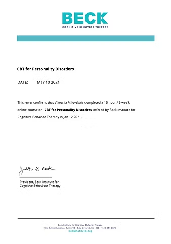
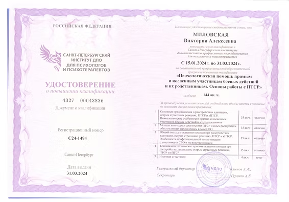
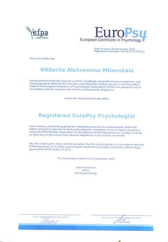
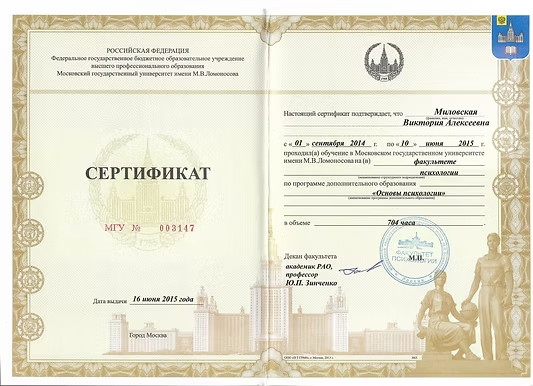
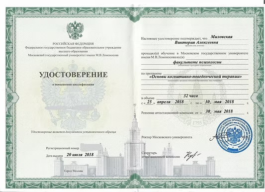
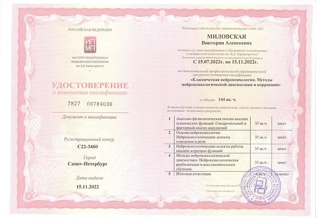
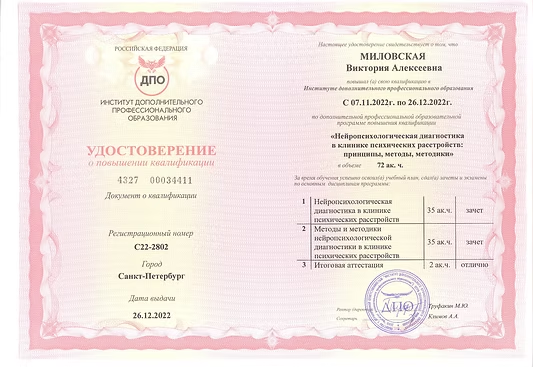
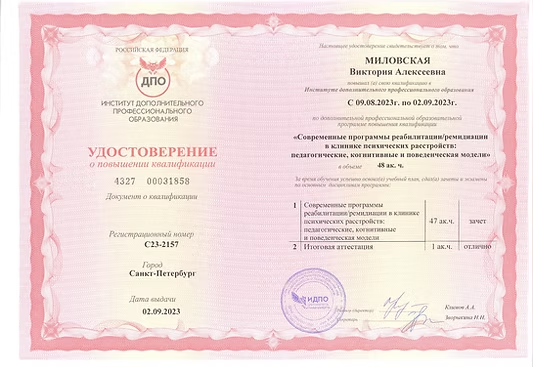
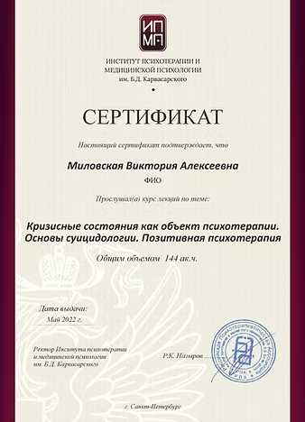
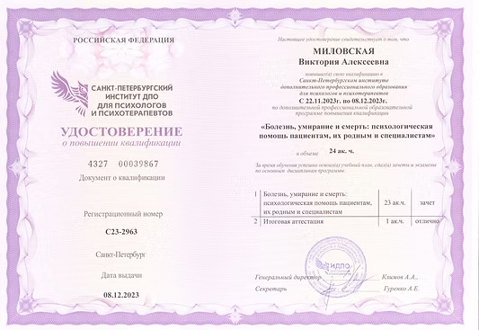
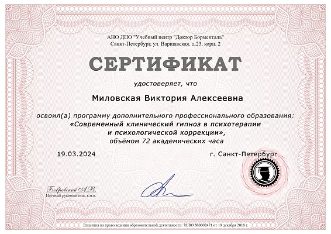
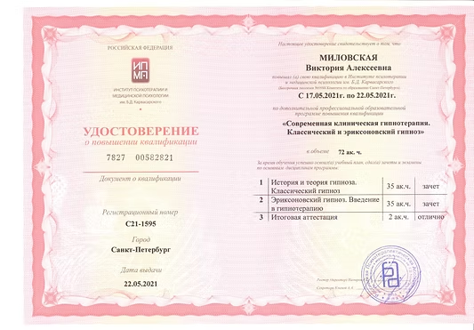
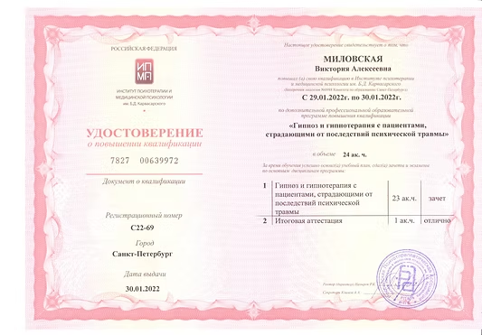
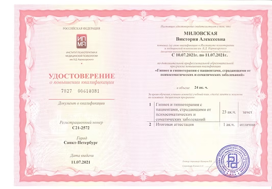
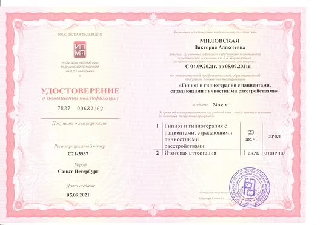
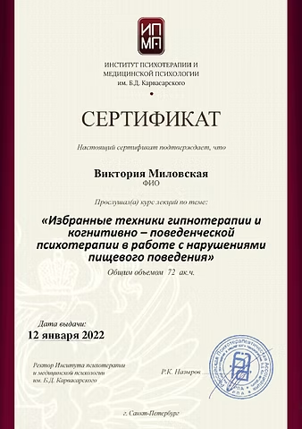
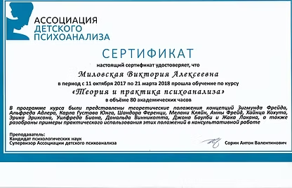
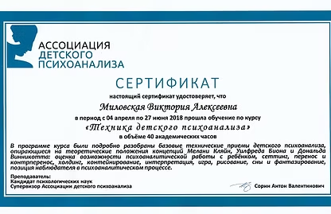
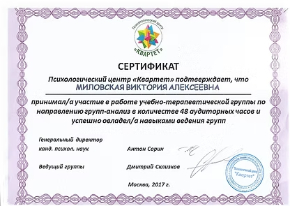
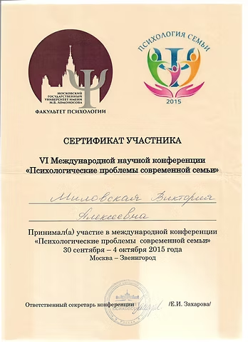
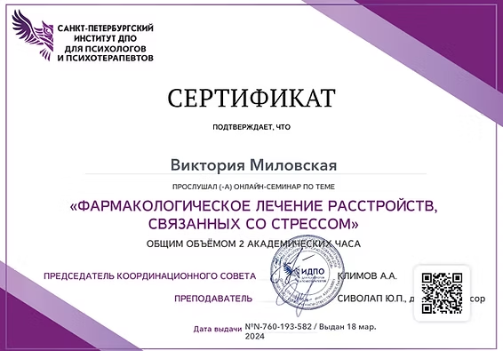
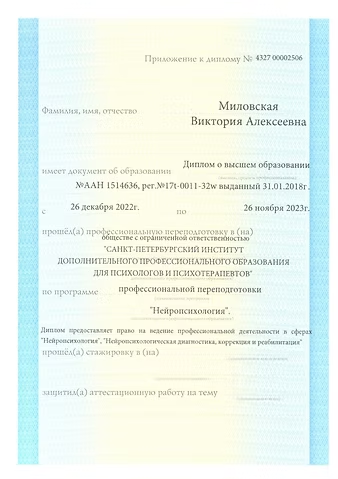
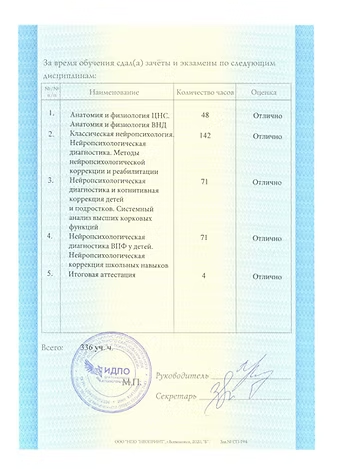
Сертификат EuroPsy представлен как часть профессиональной истории: указанный на нём срок действия — до 1 декабря 2021 года. Семинары и курсы отмечены отдельно от дипломов о высшем образовании и переподготовке.
03 / Подход к работе
Рассматриваем конкретные ситуации, замечаем автоматические мысли и убеждения, исследуем привычные реакции. Обсуждаем новые способы действовать и постепенно пробуем их в жизни.
Обсуждаем, как прошлый опыт влияет на настоящее. Подготовка, ощущение безопасности и согласованный темп важны на каждом этапе работы.
Кратко расскажите о запросе или задайте вопрос.
Уточним стоимость, удобное время и часовой пояс.
60 минут в Zoom. Дальнейший план обсудим вместе.
04 / Отзывы
Личные впечатления о консультациях, короткие фрагменты и полные оригиналы сообщений собраны на отдельной странице.
Читать отзывы →05 / Полезные материалы
Выберите тему, чтобы прочитать материал на отдельной странице.
Как разбираться в привычных реакциях и пробовать новые способы действовать.
Читать материал → 02Бережная работа с воспоминаниями, которые продолжают влиять на настоящее.
Читать материал → 03Замечать свои реакции — первый шаг к тому, чтобы лучше понимать происходящее.
Читать материал → 04Найти направление, которое отражает ваши собственные приоритеты.
Читать материал → 05Несколько спокойных минут с вниманием к собственному комфорту.
Читать материал →Когда будете готовы
Напишите мне, чтобы задать вопрос или договориться о консультации. Можно начать с простого «Здравствуйте».
{kind=link}
{kind=link}
{kind=link}
{kind=link}
{kind=link}
{kind=link}
{kind=link}
{kind=link}
{kind=link}
{kind=link}
{kind=link}
{kind=link}
{kind=link}
{kind=link}
{kind=link}
{kind=link}
{kind=link}
{kind=link}
{kind=link}
{kind=link}
{kind=link}
{kind=link}
{kind=link}
{kind=link}
{kind=link}
{kind=link}
{kind=link}
{kind=link}
{kind=link}